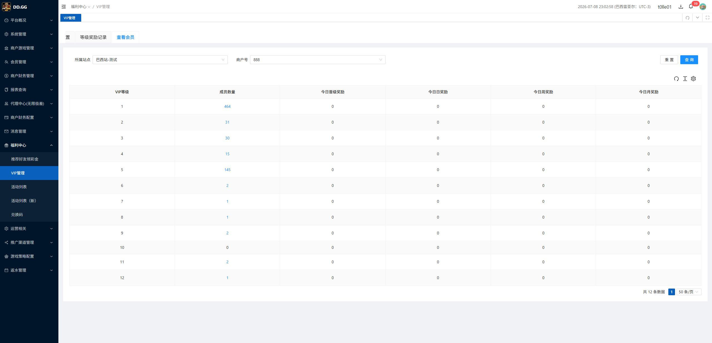

VIP管理 / 查看会员 / 成员数量 - 最终测试报告
最终结论
通过当前需求可关闭
0当前未关闭 Bug
1已修复并回归通过
1产品接受为非 Bug
需求点摘要
| 需求点 | 验收口径 | 测试结论 |
|---|---|---|
| VIP 等级列表 | 列表按 VIP 等级从低到高展示，读取 VIP 配置。 | 通过 |
| 成员数量展示 | 展示该 VIP 等级下成员数量；数量大于 0 时允许点击查看成员。 | 通过 |
| 成员数量为 0 | 0 时不可点击，点击不应出现成员明细弹框。 | 通过，已回归修复 |
| VIP 名称与 grade 映射 | 产品/后端确认 VIP0 对应 grade=1、VIP1 对应 grade=2；列表可展示 grade 数字，弹框可展示 VIP 名称。 | 非 Bug，产品接受 |
执行范围
| 测试入口 | 后台：http://site.bx-tytest.xyz/#/member/level |
|---|---|
| 业务路径 | 福利中心 / VIP管理 / 查看会员 |
| 执行方式 | 人工测试 + Multica 对照测试 + 修复后 Multica 回归验证。 |
| 操作边界 | 只做低敏只读导航、查看、点击成员数量和截图；未执行保存、提交、删除、审批、导出、充值、提现、奖励发放或会员状态变更。 |
问题处理结论
| ID | 问题 | 来源 | 最终处理 | 是否需要回归 |
|---|---|---|---|---|
| BUG-001 | 成员数量为 0 时仍显示为可点击状态，点击后可能弹出成员明细。 | 人工测试 + Multica 对照测试 | 已修复，回归通过 | 已回归，无需继续阻塞。 |
| Q-001 | 列表展示 grade 数字，弹框展示 VIP 名称，看起来存在等级少 1。 | 人工测试 + Multica 对照测试 + 后端反馈 | 产品/后端接受，非 Bug | 不需要回归。 |
| 新增问题 | 无第三个独立问题。 | Multica 对照结果复核 | 无新增 | 不需要。 |
回归证据
| 检查点 | 结果 | 证据 |
|---|---|---|
| 0 成员数量样式 | VIP10 成员数量 0 为普通文本样式，无 link / pointer / button。 |
|
| 0 成员数量点击行为 | 点击 VIP10 的 0 后未打开成员明细弹框。 |
 |
测试用例结果
| 用例 ID | 规则 | 验证点 | 结果 |
|---|---|---|---|
| TC-001 | 查看会员入口 | 进入福利中心 / VIP管理 / 查看会员，列表可见 VIP 等级和成员数量。 | 通过 |
| TC-002 | 非 0 成员数量 | 成员数量大于 0 的行可点击查看成员明细。 | 通过 |
| TC-003 | 0 成员数量样式 | 成员数量为 0 时不显示为蓝色 link / button，鼠标不为 pointer。 | 通过 |
| TC-004 | 0 成员数量点击 | 点击成员数量 0 后不弹出成员明细。 | 通过 |
| TC-005 | VIP 名称与 grade 映射 | VIP0=grade1、VIP1=grade2 的展示差异按产品/后端口径接受。 | 非 Bug |
残余风险
| 数据覆盖 | 本次回归覆盖当前页面可见的 0 成员数量行 VIP10。若后续其他 VIP 等级也出现 0，建议按同一规则纳入常规回归。 |
|---|---|
| 只读边界 | 本次未制造新会员数据，也未修改 VIP 配置；结论基于 UAT 当前数据状态。 |
关联产物
| Bug 去重与状态整理 | vip-member-count-bug-triage.html |
|---|---|
| Multica 回归报告 | ../multica-runs/vip-member-count-regression-20260709/regression-report.html |
| 历史人工 Bug 单 | vip-member-count-bug-tickets.html |
| 历史 Multica 对照 Bug 单 | ../multica-runs/vip-member-count-squad-check/bug-tickets.html |